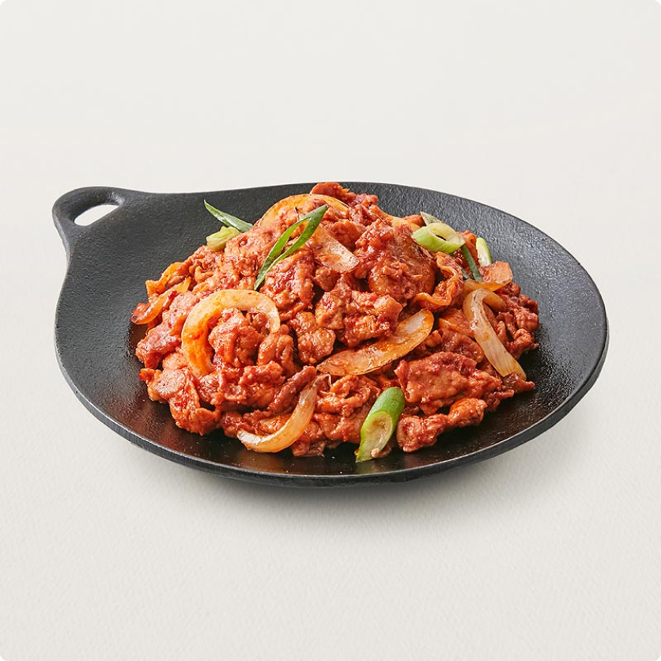

- 자유게시판
- 인디갤러리
- 모집

재료 :
돼지앞다리살 350g, 대파 1.5줄기, 양파 작은것 1개, 양배추 65g, 당근 35g, 청·홍고추 각각1/2개,
진간장(2), 황설탕(2), 고추장듬뿍(1), 고춧가루(1), 다진마늘(1), 참기름(1), 후춧가루 기호껏, 식용유(3), 물 1/2컵(90ml)
따라하면 무조건 성공하는 맛있는, 착한 사람들에게만 보이는 제육볶음 레시피가 적혀있습니다.

 178
178
댓글 2

농담곰 1분전
레시피 안 보이는데요. 신고했습니다. 삭제하기